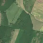
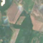

2,2 ha · Horea, com. Sanislău
văzută schimbată prima dată pe 15 mai 2026


Nu am găsit nicio autorizație de tăiere în jur.
Ce se vede în poze: În «poza detaliată» și în «înainte», zona marcată este acoperită de coroane dense de copaci, ca o pădure închisă. În «după» apare o porțiune deschisă, maro-gălbuie, cu margini ascuțite, care arată că arborii au fost tăiați.